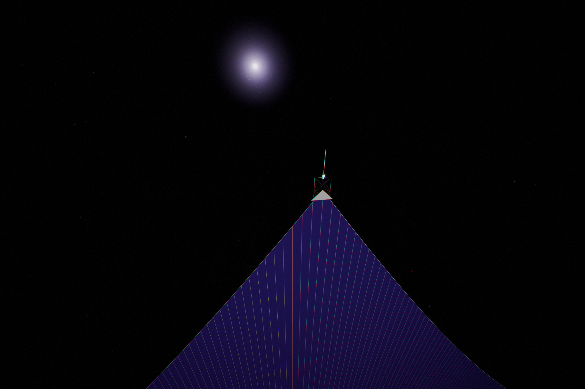
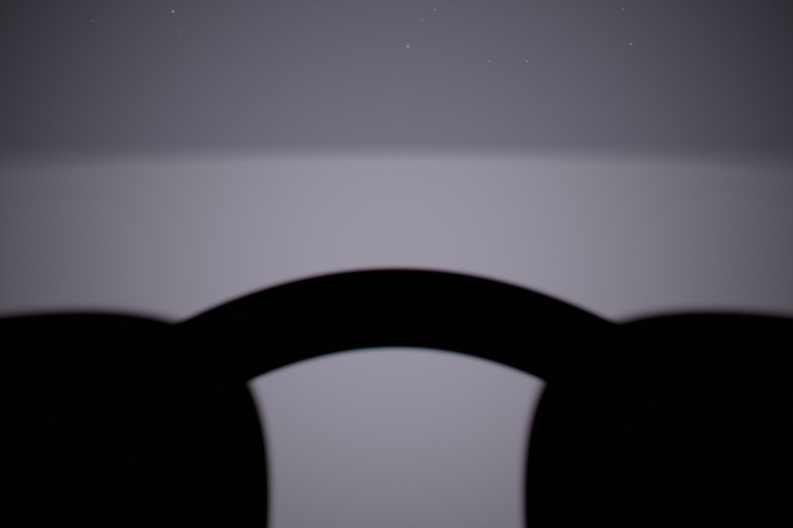
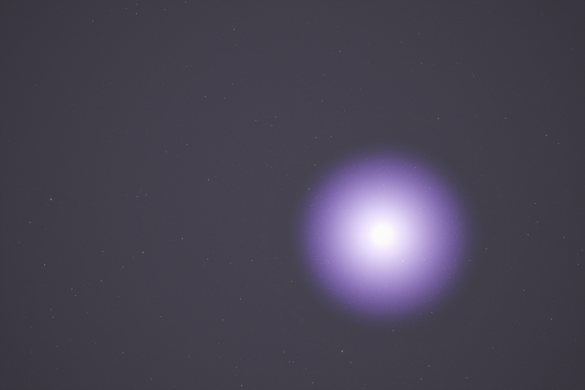
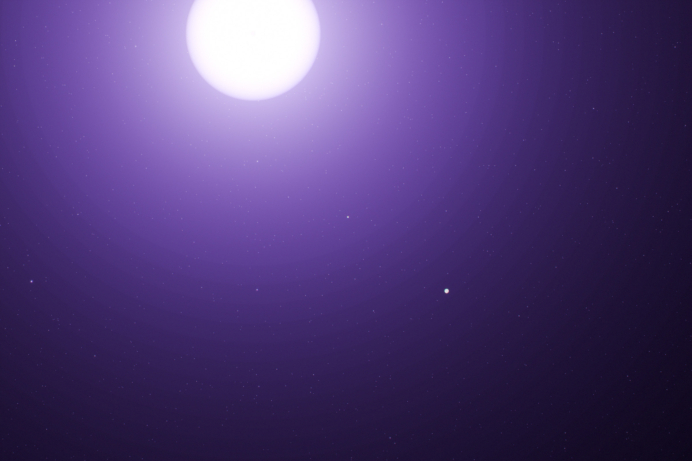
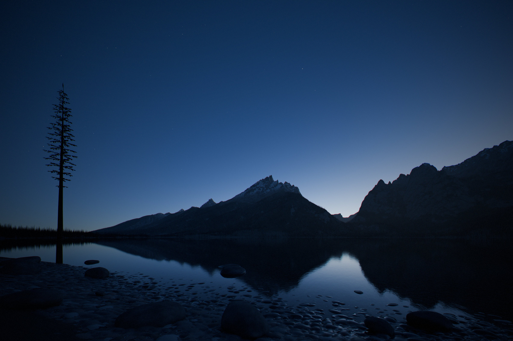
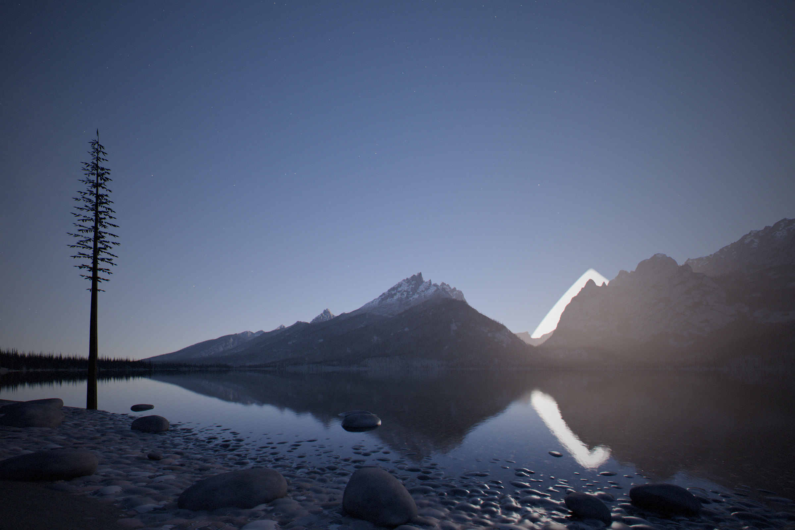
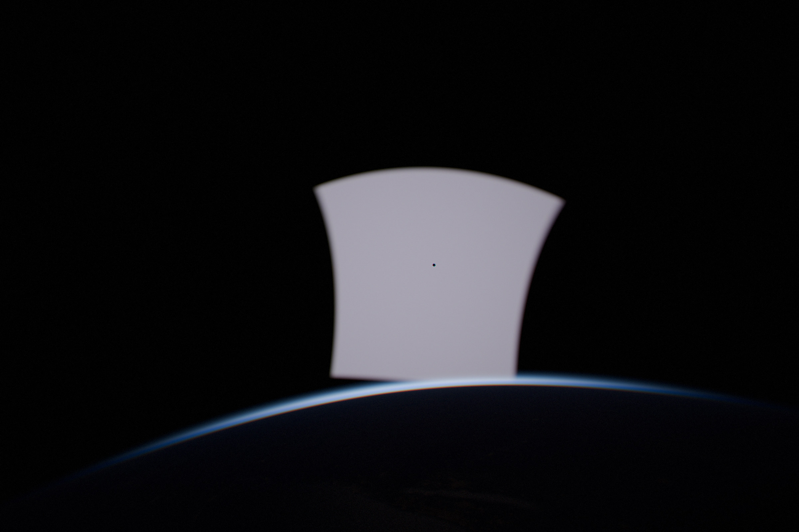
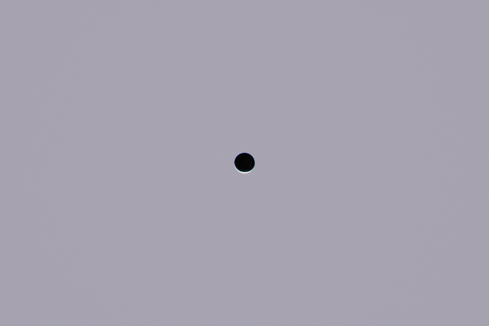

Most pictures of a Dyson swarm show the Sun wrapped in glittering machinery. We tried to work one out properly: mine Mercury, turn it into solar panels that are also computers, and fly them around the Sun. The swarm we ended up with is made of nearly black sheets, hides on the far side of the Sun, and is stopped not by Mercury, energy or engineering but by the heat it sends back to Earth. Every photograph and figure here comes from one physics model, and if you change an assumption the whole page recomputes.
The short version
Words and units used on this page
- Share of the Sun's light
- The fraction of everything the Sun puts out that the sails catch. The swarm Earth allows catches a few per cent.
- AU
- The distance from Earth to the Sun, 150 million km.
- W/m² of extra heat
- How much more energy Earth absorbs, for every square metre of its surface. Doubling the CO₂ in the air adds about 3.9.
- FLOP/s
- Calculations per second. One 2025 AI chip does about 10¹⁵; all of them together, about 3×10²².
- lux
- How brightly the ground is lit. A moonless night is 0.001, a full Moon 0.25, a lit street 10 to 20.
- cd/m²
- How bright a surface or a patch of sky looks. A dark night sky is 0.0002, the sky at dusk 1 to 100, a white page under office light about 100.
- Magnitude
- Astronomers' scale for points of light. Lower is brighter, and 5 steps is a factor of 100. The faintest stars you can see are +6, Venus −4.5, the full Moon −12.7, the Sun −26.7.
- Kelvin (K)
- Temperature counted up from absolute zero. A room is about 295 K, a chip at its limit about 360 K, and 1,650 K is orange-hot.
- Ecliptic
- The path the Sun and planets follow across the sky. Seen from Earth, the far-side swarm lies along it.
- L1 and L3
- L1 is the balance point 1.5 million km from Earth toward the Sun, where a sunshade can hover. L3 is the point on Earth's orbit directly behind the Sun.
- Counter-sun
- The point in the sky exactly opposite the Sun. Every sail beyond you in that direction mirrors the Sun back at you at once.
- Thermal infrared
- The heat glow that thermal cameras see, here the 8–14 µm band. Warmer things are brighter.
A sheet, not a box
Each satellite is a huge, nearly black sheet of solar film, thinner than paper, which is also the computer.


The panel is the computer
The chips are spread through the film, so the film's own surface gets rid of their heat.


Why the chips are not in one box
Gathering the chips into one box would need pumps, pipes and radiators that weigh more than the chips. Spreading them out avoids all of it.


A sky cut in two
Inside the swarm the sky splits in two: an even glow on one side, and on the other the rest of the swarm, seen across the empty middle of Earth's orbit.
Out on the far side the sails sit in one thin layer on Earth's orbit, about 600,000 km thick and hundreds of millions of kilometres across, and they are packed close: neighbours are about 60 km apart. From any one of them the sky splits along the layer. Every sail farther from the Sun than you shows you its sunlit face, and together they fill the half of the sky away from the Sun with an even glow of 12 cd/m², as bright as a clear sky in early twilight.
The other half is stranger. Look sunward and you see the backs of the sails just inside you, which are dark, and through the gaps between them, across the empty middle of Earth's orbit, the rest of the cloud from the inside. Every sail over there faces the Sun, and so faces you, which makes that part of the sky nearly twice as bright: 22 cd/m². It has hard edges. The cloud stops 30° above and below Earth's orbit and leaves a gap round the point straight behind the Sun, and past those edges space is black.

The layout inside Earth's orbit is a different place. Its sails are spread over the whole sky round the Sun, about 300 km apart, so from any one of them the others are just points of light. Two dozen or so within 1,000 km shine like the brightest stars, and tens of thousands more fill the sky down to the limit of the eye. Added together they light the sky away from the Sun to about 0.8 cd/m². You could live inside that swarm and still see mostly empty space.


Where the rock comes from
Mercury has rock to spare. What it runs short of is a way to get rid of the heat of digging it up and throwing it into space.


Chip fabs set the pace, so they are the first thing to leave Mercury. In space a fab needs no building, no clean air and no water. The free vacuum alone removes about 60% of a fab's electricity and a third or more of its equipment. Mercury has almost no hydrogen, so the chemistry has to run dry, on chlorine, oxygen, zinc and magnesium.
How fast it can be built, and where it stops
For decades there is nothing to see. Then the swarm grows fast, until Mercury cannot shed heat any faster.
Earth decides how big it may get
Every watt the sails catch ends up as heat, and some of it lands on Earth. That, not engineering, sets the size.








The Sun dims, and a cool infrared star appears
From light-years away the Sun would look a little dimmer, with a faint infrared glow it never had before.
Today's hardware never flies
The swarm takes a century to build and its sails are replaced every 10 to 20 years, so it is made of hardware that does not exist yet.